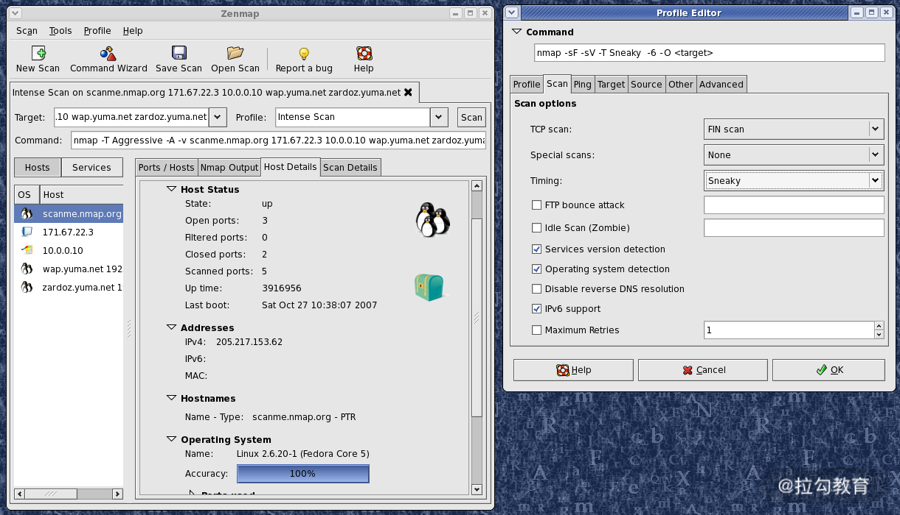
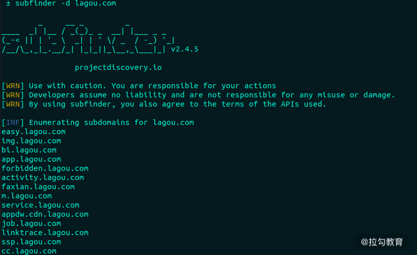
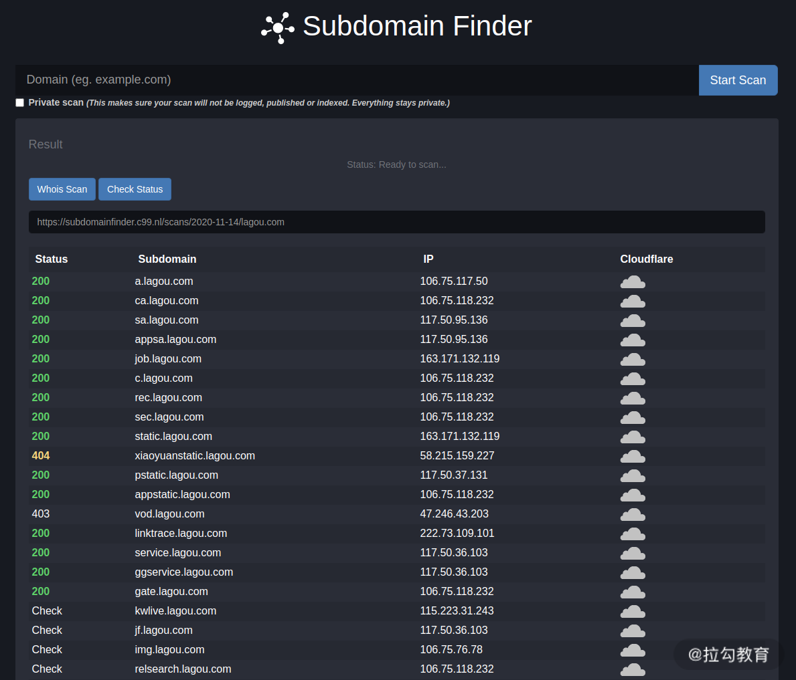

要点：web渗透、信息收集、靶场搭建、XSS、SQL注入、CSRF漏洞、SSRF漏洞、XXE漏洞、反序列化漏洞、文件上传漏洞、命令与代码注入、逻辑漏洞、内网渗透、研发安全。
一、概览
1.1 Why Web 安全？
随着时代的发展，如今无论是国家还是企业，都十分重视网络安全，各种相关的岗位也随之出现。在拉勾网上搜“Web 安全”就能找到相关的岗位。
根据 HackerOne 的报告数据（下图），71％ 的安全问题都出现在网站上，其次是一些 API 接口，这些接口可能是 Web 的，也有可能是二进制软件的；再往下就是 iOS 与 Android 应用了。
可以说，网站安全攻防，也就是我们俗称的 Web 安全，占比通常达到了 80％以上。Web 安全是最受外部黑客关注的目标，也是企业应该重点防御的对象
尽管 Web 安全如此重要，但我在面试一些渗透测试岗位的求职者时，发现多数人要么只懂得利用，不懂得防御，要么就是缺乏实战能力。
企业你是想让你来发现和解决安全问题的，如果不懂防御，又如何为企业提供相应的解决方案呢？更何况 Web 安全是一项注重实战的技能，如果缺乏实战能力，到了真被入侵的时候，根本就无法应对。
另外，学习 Web 安全相关的知识，不仅可以帮助你提升自己，还能赚取赏金。国内外企业都有自建安全响应中心，用于接收外部报告漏洞；然后，依据漏洞危害等级和质量给予相应的赏金或礼品，比如 TSRC（腾讯安全应急响应中心）、MSRC（微软安全响应中心）。此外也有一些知名的第三方漏洞奖励平台，比如 HackerOne，上面经常会公开一些漏洞案例，非常有学习价值。
1.2 学习模块
分成了 3 个模块
模块一：Web 攻防基础
这是正式开始前的准备工作，主要介绍了一些常用的工具，并带你搭建靶场，避免非法测试他人网站。通过这一部分的学习，你可以掌握一些常用的渗透工具和信息收集的方法，帮助你提高测试效率和成功率；搭建靶场也能让你更好地理解漏洞的产生原理和利用，提高实战能力。
模块二：漏洞攻防原理
作为这门课最硬核的部分，在模块一的基础上，补充了一些实用的工具和测试方法（例如 sqlmap），讲解了各种常见的 Web 漏洞攻防原理，教你进行安全测试，并通过靶场进行演练。通过这一部分的学习，你可以了解 XSS、SQL 注入、CSRF 等常见 Web 漏洞类型的攻击与防御方法。只有深入学习这些漏洞攻防技术，才能避免自己成为只会使用工具的“脚本小子”。
模块三： Web 安全建设
这里介绍的是企业内部对于 Web 安全漏洞的防御方法。如何更系统、更全面、更早地检测、修复、拦截各种漏洞，防止企业产品遭受外部利用漏洞进行恶意攻击是这一模块的重点。业务开发过程中，避免安全漏洞的产生也是一个非常重要的流程。
1.3 How 学习web渗透技术
Web 所涉及的内容
一般来说，我们常说的 Web 是指网站，其本义是万维网。这个实际涵盖的内容就很多了，涉及浏览器、服务器运行环境等常出现内存破坏漏洞的应用和系统。但是在安全行业内，我们通常所说的 Web 安全，是指 Web 应用安全，即网站安全，也包含仅提供后端 CGI 服务的应用（供移动 App 调用的，无直接的前端网页），可以简单地分为前端和后端，如下图所示：

平常行业内所说的二进制安全，通常是指内存破坏漏洞、逆向工程、病毒对抗等涉及二进制数据分析的技术领域。虽然浏览器、Linux 系统等也是 Web 领域中的一个环节，但本课程不涉及二进制安全内容，仍以狭义上的网站安全为主要内容。
在学习 Web 安全的过程中，有 3 个阶段。
1.4 三个阶段
阶段一：前端知识学习
前端开发主要就是 HTML、CSS、JavaScript 这 3 门语言的学习。在学习前，建议先了解下 HTTP 相关的知识，掌握它的工作原理、请求方法、响应头、状态码、内容类型等等
学完之后，直接用 Chrome 浏览器的检查器（快捷键 F12 或 Ctrl+Shift+I）里的“Network”标签查看 HTTP 请求与响应包数据，如下图所示：
阶段二：后端知识学习
随着 Node.js 的崛起，很多后端也开始用前端语言 JavaScript 来开发后端功能。Node.js 基于 Chrome V8 提供的 JavaScript 运行环境，非常适合前端工程师作为进军后端开发的阶梯。关于 Node.js 教程的链接在文末的“其他资料”一节中已附上。
更为传统的后端开发经常是搭配 PHP+MySQL 数据库。以下是 2020 年 W3Tech 对当前 Web 开发技术的调查情况，其结果表明全球 78.8% 的网站使用 PHP 作为服务器后端开发语言。
阶段三：漏洞攻防学习
Web 漏洞包含哪一些主流的漏洞类型，最佳的参考就是 OWASP Top 10，不过它在 2017 年之后就停止更新维护了。以下是当前的官方统计结果，按顺序排名。
注入：SQL、NoSQL 数据库注入，还有命令注入和 LDAP 注入等。
失效的身份认证和会话管理：比如攻击者破解密码、窃取密钥、会话令牌或其他漏洞去冒充他人的身份。
跨站脚本（XSS）：XSS 允许攻击者在受害者的浏览器上执行恶意脚本，从而劫持用户会话、钓鱼欺骗等等。
失效的访问控制：比如越权访问其他用户的个人资料、查看敏感文件、篡改数据等。
安全配置错误：比如服务器的不安全配置，导致敏感信息泄露。
敏感信息泄露：比如账号密码未加密存储、敏感数据传输时未加密保护，最终造成数据泄露。
攻击检测与防护不足：比如 WAF、主机入侵检测等防御系统部署不全，这块偏向漏洞防御本身。
跨站请求伪造（CSRF）：攻击者诱使其他登录用户访问恶意站点，以冒用对方的身份执行一些敏感操作。
使用含有已知漏洞的组件：比如一些第三方的开源库、框架等，尤其是已公开漏洞的旧版本，比如名燥一声的 Struts2 漏洞，因频繁出现漏洞被许多开发者弃用。
未受有效保护的 API：比如浏览器和移动 App 中的 JavaScript API，常常因其提供的特殊功能未受有效保护而被滥用，造成不同等级的危害程度。
推荐书籍：《黑客攻防技术宝典：Web 实战篇》和《白帽子讲 Web 安全》
1.5 学习技巧
面向岗位学习
关键在于“任职要求”，一般招聘信息里面都会有“职位描述”和“任职要求”或“岗位要求”的信息，“任职要求”里面与技术相关要求就是你要学习的方向。比如上图 360 的招聘信息，总结下技术要求就是：熟悉 Web 漏洞攻防、工具实战、开发能力。
面向赏金学习
当前国内 SRC（安全响应中心）平台早已是企业标配，各家各户有能力的都在自建，没能力没条件的就寄托在第三方漏洞平台上。无论是自建的还是寄托在第三方漏洞平台上的，它们的目的只有一个，那就是收集自家产品漏洞，提高产品安全性，完善自身检测与防御系统，同时避免被公关炒作。
SRC 平台会给报告者提供奖品或现金奖励，因此长期吸引着大批白帽子为其测试网站。国外比较著名的漏洞奖励平台有 HackerOne，像微软 Google、Apple 也都有自己的漏洞奖励计划，但因后者都是美金奖励，在汇率的优势下，奖金换算成人民币，常常价值不低。这也是一些老白帽子更喜欢混迹于国外漏洞奖励平台的原因。
Web 漏洞常常都能够直观地危害到网站的安全性。它们整体上相比二进制漏洞更容易被利用，危害也就更大。除了像微软、Google、Apple 这种集中在二进制漏洞为主的奖励计划，很多赏金其实都是分给了 Web 漏洞，比如 SRC、HackerOne。
你可以根据漏洞奖励计划中提供的网站范围，有针对性地进行安全测试，然后将发现的漏洞报给平台换取赏金。这种以赏金为驱动力的学习方式，对于在校生特别有诱惑力。他们可以通过赏金购买书籍、电子产品进一步学习，然后挖掘更多漏洞，赚取更多赏金，将学习转变为主动学习，构造出良性特征的学习动力。
采用面向赏金的学习方法，不仅可以提高自身的漏洞实战能力，而且还可以赚取赏金，何乐而不为？
面向工具学习
GitHub 上经常开源一些优秀的安全工具，在 Web 安全领域，以 sqlmap 最为著名。整个项目非常工程化，表现能力也非常优秀。它采用 Python 开发，通过阅读 sqlmap 源码，对研究 SQL 注入漏洞有很大的帮助。
其他的还有一些漏洞靶场，除了实战测试，也可以通过源码了解是什么样的代码导致的漏洞，避免自己在未来开发中遇到。
一些优秀的开源工具，常会提供一些不错的漏洞检测和利用的方向，及时掌握相关技术，有助于自身技术的与时俱进，避免落后于技术发展。
面向漏洞学习
在国外有词叫 Variant Analysis，直译过来叫“变异分析”，意思是通过历史漏洞学习和研究，从而挖掘出类似产品中更多相似的漏洞。尤其是同一款产品下，如果开发写出了一个漏洞，那么在其他地方出现同一类漏洞的概率就比较大。
乌云网已经成为历史，但其遗留下的漏洞案例是一笔不错的财富。网上也有人搭建了乌云镜像提供相关的漏洞、知识库的检索，你可以点击链接查看。
HackerOne 通常在漏洞修复后的 3 个月会公开漏洞细节，栏目名叫“Hacktivity”，它提供 RSS 订阅，可以非常方便地关注。
说到漏洞库就不得不提 Exploit-db，其中有着丰富的漏洞细节和利用代码。2014 年那时还是一个叫 milw00rm 的漏洞库为主流，milw00rm 不再维护后，所有漏洞信息都被并入了 Exploit-db。至今，Exploit-db 还在正常运营，其背后的团队正是打造了著名黑客系统 Kali 的 Offensive-Security 安全公司，是一家专门从事安全培训和渗透测试服务的提供商。

这种通过漏洞学习漏洞的方式，除了加深对漏洞的理解，还可以提高漏洞挖掘的产出，是一种十分有效地学习方式。
面向大牛学习
在你感兴趣的安全领域里，通常都有一些大牛，你可以去收集他们发表的论文、文章、大会议题，关注他们的微博、公众号、Twitter、GitHub、博客等社交平台账号，去了解他们的技术成长路线。
这种学习方法，前期以模仿为主，参考他们的学习方法、技术文章，把握行业技术趋势；后期是在入门之后，有了一定的技术积累，就可以开始在前人的基础上自主研究技术、创新技术，这是比较难的一个阶段，但突破后，你在技术上将会有质的飞跃。
关注安全动态
技术发展非常迅速，一不留眼你就落后了，所以要避免闭门造车，比如诺基亚的塞班、微软的 Windows Mobile，现在都退出了历史舞台，如果你之前不关注这些，还在埋头研究它们的安全性，那就有点浪费时间了。
你可以关注一些技术资讯网站、公众号、Twitter、Github、博客、RSS 订阅集合，国内外安全大会（工业界顶会：BlackHat、Defcon、CanSecWest、OffensiveCon，学术界顶会：CCS、NDSS、Oakland S&P、USENIX Security），以及 CTF 比赛等。这些都可以帮你了解安全动态的途径。
在文末的“网站推荐”中，我已经整理一份清单，建议你采用 RSS 订阅的方式关注，手机上装个 RSS 订阅客户端，比如 Inoreader、Feedly、深蓝阅读，一有更新就可以立马感知到，非常方便。
1.6 学习资料清单
书籍清单
| 《JavaScript DOM 编程艺术》：https://item.jd.com/10603153.html |
| 《JavaScript 高级程序设计》：https://item.jd.com/12958580.html |
| 《PHP 和 MySQL Web 开发》：https://item.jd.com/10059047.html |
| 《黑客攻防技术宝典：Web 实战篇》：https://item.jd.com/11020022.html |
| 《白帽子讲 Web 安全》：https://item.jd.com/11483966.html |
| 《Web 安全测试》：https://item.jd.com/10021008335997.html |
| 《Web 前端黑客技术揭秘》：https://item.jd.com/11181832.html |
| 《SQL 注入攻击与防御》：https://item.jd.com/12369984.html |
| 网络安全从业者书单推荐：https://github.com/riusksk/secbook |
网站推荐
| FreeBuf：https://www.freebuf.com |
|---|
| 安全客：https://www.anquanke.com |
| Seebug Paper：https://paper.seebug.org |
| 安全 RSS 订阅：http://riusksk.me/media/riusksk_RSS_20190330.xml |
| CTFTime Writeups：https://ctftime.org/writeups |
| 安全脉搏：https://www.secpulse.com |
| SecWiki：https://www.sec-wiki.com |
| 玄武每日安全：https://sec.today/pulses |
| 学术论文检索：https://arxiv.org/search/cs |
| Exploit-db：https://www.exploit-db.com |
| Github：https://github.com |
| 信息安全知识库：https://vipread.com |
| 先知社区：https://xz.aliyun.com |
二、常用渗透测试工具
Burp Suite
Burp Suite：集成化的 Web 应用测试工具
使用 Burp Suite 前需要配置浏览器代理，这样才能将 HTTP/HTTPS 请求转发到 Burp Suite 上进行分析与测试
在 Chrome 的设置中搜索“代理”会让你选择“打开您计算机的代理设置”，如下图所示：
打开之后你就可以设置 HTTP/HTTPS 代理为 Burp Suite 的对应端口，默认为 127.0.0.1:8080。下面两张图分别是系统和 Burp Suite 上的代理设置页面：
如果每次使用都要进行这样的配置代理其实还挺麻烦的，毕竟有时也得正常地使用浏览器上网。我在这里推荐个小技巧：你可以使用 Chrome 上的插件“Proxy SwitchyOmega”来快速切换代理，如果你用的是 FireFox，那可以使用 FoxyProxy 插件。
在 Chrome 应用商店中搜索“Proxy SwitchyOmega”并安装它，然后像下图这样配置：
配置完成后你就可以在 Chrome 浏览器右上角的插件栏中点击“Proxy SwitchyOmega”插件图标，选择上面创建的“Burp Suite”情景模式开启代理，若想关闭代理直接选择“系统代理”即可。
下图是代理成功后，Burp Suite 拦截到流量的效果图：
其他更详细的 Burp Suite 功能，你可以参考Burp Suite Document和Burp Suite 实战指南这两份资料学习，此处不再展开。
Acunetix WVS
Acunetix WVS（Web Vulnerability Scanner）是 Web 漏洞扫描器。
WVS 支持登录态扫描，可以登录账号访问需要权限的页面，从而爬取更多 URL，提高漏洞发现率。这个功能很重要，有些网页的功能全都要求登录，如果没有这一步设置，你什么也扫不到。不过现在很多扫描器也支持登录态扫描了。
Xray
Xray：Web 漏洞扫描器
随着 WVS 的没落，国内的长亭科技出了一款叫作 Xray 的漏洞扫描器，现在国内不少白帽子开始使用它。他们会自己开发一些自动化工具去爬虫，然后导入地址到 WVS 和 Xray 扫描（参考资料：Xray_and_crwlergo_in_serve、crawlergo_x_XRAY），在扫到漏洞后，微信会自动通知。
Xray 的准确率要比 WVS 高，但漏洞发现率不是很高，经常扫完后报告是空的，而且 Xray 的扫描速度很慢，还有一定优化的空间。
Goby
Goby：基于网络空间测绘的漏洞扫描器。
Goby 是一款国内新出的安全扫描器，它基于网络空间测绘技术进行资产收集，也就是先通过对目标网络的 IT 资产进行规则分析，建立知识库，在发生安全事件时就能直接用于应急响应，这项功能比较适合企业内部。Goby 属于免费的工具，且跨平台支持 Windows、Linux 和 macOS，界面不错，还提供了多个皮肤。
Goby 有个比较实用的功能，那就是支持自定义规则的漏洞扫描框架。它本身也会收集一些产品的 PoC（概念证明，常被用于验证是否存在漏洞，如下图所示），同时在外部曝光或自主挖掘到漏洞时，借助该框架添加规则，可以快速去扫描相关资产是否存在漏洞，对于企业应急和个人刷 SRC 平台漏洞是一个神器。

Goby 的使用可以参考官方文档中的内容。
SQLMap
SQLMap：SQL 注入检测与利用
SQLMap 无疑是 SQL 注入工具中的王者。在 SQL 注入漏洞检测与利用上，SQLMap 提供了非常全面的功能，哪怕是一些漏洞无法检测到，许多白帽子仍习惯在上面做二次开发，或者利用 tamper 脚本来扩展。
后面将会使用此工具学习。详细的使用方法可以从官网了解。
Nmap
Nmap：网络扫描与主机检测。
Nmap 有界面版本和命令行版本


很多人只知道 Nmap 可用于端口扫描和主机服务识别，但实际上它远不止如此。Nmap 提供的丰富脚本，大大扩展了它的功能，它可以探测弱口令，甚至是漏洞扫描。Nmap 的功能十分强大，需要你慢慢探索。
关于 Nmap 详细的使用说明，你可以参考官方文档
在“信息收集”一节中，会使用nmap。
Postman
Postman：模拟发包工具
虽然 Burp Suite 功能强大，但有时会觉得开启代理麻烦，对于能在浏览器上直接完成的，一般都不开 Burp Suite 操作。
Chrome 上自带的开发者工具可以直接抓包查看：通过在网页右击，选择“检查”即可打开；然后切换到“Network”标签页，操作网页后即可获取到网络请求包，但它不支持拦截修改请求包。
如果你想直接构造请求去发包，或者用来测试一些网络接口的调用，那使用 Postman 再适合不过了。安装完 Postman 后，通过 Chrome 标签栏的“应用”即可打开 Postman。
Postman 也支持网络拦截来修改数据包重发，但需要另外安装个插件“Postman Interceptor”，我感觉没有 Burp Suite 来得好用和强大，因此我很少用它。关于 Postman 更多的使用方法，可以参考官方文档
对于 Postman 与 Burp Suite，轻量操作可以选择 Postman，比如单纯发包测试接口，又懒得配置代理的操作；如果你需要更多安全测试方面的功能，比如改包、批量发包测试用来暴力猜解密码或遍历信息，那么 Burp Suite 无疑是最佳的选择。
HackBar
HackBar：安全测试插件
HackBar 是一款非常经典的 Web 安全测试插件，最早出现在 FireFox 浏览器中，后来也被移植到了 Chrome。它可以用来构造 GET/POST 请求，自带一些编码解码工具，以及 XSS 和 SQL 注入常用测试用例，能为你在实际测试中提供很大的便利。
HackBar 的功能跟 Postman 有些类似，都是用来模拟发包的工具，但 HackBar 显然是为专业的安全人员开发的，而 Postman 虽然有很多开发在用，但常被用来测试一些网络 API 接口。
HackBar 使用非常简单，正如它简洁的界面一样，所有的功能都可以很快上手，用几次基本就熟练了。无论是 HackBar 还是 Postman，你都可以试一下，选择自己顺手的工具即可。不管什么工具，能够帮助你挖到漏洞的都是好工具。
NC（NetCat）
NC（NetCat）：网络瑞士军刀
简单易用，功能强大，在行业内非常流行。在实际渗透测试中，常用的有两个功能：
- 监听端口以等待后门回连
- 发包测试，有时请求包内容较多，可以放在一个文件里面直接提交（不局限 http/https 这种请求），其他任意端口都支持，所以它要比 postman 和 hackbar 这些发包工具的应用范围要广。
除此之外 NC 还有其他功能，比如端口扫描、作为代理来端口转发数据，甚至可以在两台主机之间搭建起聊天室。
更多 NC 命令参数的使用，可以通过 man nc 命令来查看。
Metasploit
Metasploit：渗透测试平台
Metasploit 在渗透测试中经常被使用到，它不是一个单纯的工具，而是一个集成各种渗透测试工具的平台，上面有很多漏洞利用工具，还有免杀处理、后门生成与留存、远程控制等很多强大的功能。
Metasploit 在主机渗透，甚至是当前移动手机上的渗透测试都可以使用，所以这里我非常推荐你去好好研究一下 Metasploit 平台的应用。
国内外已经出版了很多本关于 Metasploit 的书籍，你也可以直接阅读官方文档。
三、信息收集
3.1 信息收集分类
根据收集方式的不同，我们可以将信息收集分为两类：主动收集和被动收集。
- 主动收集是指通过扫描确认目标的操作系统和网络服务，为后续发现漏洞提供信息帮助，但它可能引起目标的注意，或被记录下扫描行为。一些服务指纹检测、网站爬虫都是主动收集的方式，它们直接向目标发起请求，在有防火墙的情况下，可能会被拦截告警。
- 被动收集是指在不接触目标的情况下，通过互联网搜索来收集目标遗留在网络中的信息。这样可以避免引起目标的警觉。网上很多人说的公开来源情报（Open-Source Intelligence，OSINT，简称“开源情报”）正是需要被动收集的信息，它是从公共资源中收集到的。
综上可以看出，主动收集与被动收集的主要区别就在于收集信息的过程中是否需要接触目标。在实际渗透测试过程中，一般两种方法都会用上，以收集更多有价值的信息
在收集信息时，无论是主动还是被动，都建议使用小号，尤其是在一些社交平台上的信息收集，小号可以避免行为暴露。
3.2 信息收集实践
收集子域名和 IP 常常是信息收集的开端，这对你摸清整个目标的资产起着很关键的作用，它们直接决定了渗透目标范围的大小。当然，有时候渗透测试任务直接限死子域名，这种情况下这一步就可以直接省略了。
在 GitHub 上有一个开源项目，叫 bounty-targets-data，它会收集一些漏洞奖励计划中的域名范围，并在持续更新，目前已经收集了 2000 多个域名。对于喜欢刷漏洞奖励平台的同学，bounty-targets-data 确实是一份不错资源，它可以开启循环扫描，不停地去扫这些有奖励计划的域名，运气好的话，可以挖到漏洞拿奖金。
关于收集子域名的技术原理在《红蓝对抗之域名搜集方法总结》中有详细的介绍，主要包括证书透明度、DNS 查询、Whois 查询、备案网站、搜索引擎、暴力猜测等多种方法实现。
收集子域名可以通过一些在线网站或者本地工具来收集，常用的工具或站点有 OneForAll、subDomainsBrute、subfinder、ESD、Amass、DNSDumpster 和 Subdomain Finder。
OneForAll
在功能上非常集全，使用字典爆破、证书透明度、常规检查（域传递、sitemap 文件、robts 文件、内容安全策略 csp 等）、网络爬虫、DNS 数据集、DNS 查询、威胁情报平台、搜索引擎等多种方式，也支持多种文件格式导出。OneForAll 收集到的有效域名很多，但经常会有误报，速度也相对比较慢。
使用示例如下：
python3 oneforall.py --target lagou.com run
subDomainsBrute
采用暴力猜解域名的方式，速度快、准确度高。但由于是字典猜解方式，仍会存在一定的漏报。
同一域名有时会有指向多个 IP 地址情况，因为企业可能采用 CDN 内容分发网络，就近选择网络最好的节点服务器响应用户。因此，有时同一台机器访问同一个域名时，会访问到不同的 IP，比如 weixin.lagou.com 就是如此。
subDomainsBrute 也会将同一域名指向的多个 IP 一并收集起来，但如果超过 10 个 IP 就会放弃收集。
使用示例如下：python3 subDomainsBrute.py lagou.com
subfinder
subfinder 的扫描速度很快，它支持很多第三方 API 接口（需要配置），同时支持多种输出格式，但 subfinder 没有字典爆破域名的功能。
使用示例如下：subfinder -d lagou.com

ESD
ESD支持域名爆破、DNS 解析、域传递、搜索引擎、证书透明度等多种搜索方式，还支持 zoomeye、censys、fofa、shodan 等网络空间搜索引擎的接口结果收集，这个需要在配置文件中设置 key 或者账密才能使用。
使用示例如下：esd -d lagou.com

Amass
Amass是一款 OWASP 出口的资产搜索工具，除了常规的域名收集方式，它还支持搜索结果可视化，并能从很多网站和 API 收集子域名。另外，它提供了一套类似 Nmap 的脚本引擎，支持用户自定义数据源以扩展搜索范围。它的扫描速度非常慢，但能够收集到非常多的子域名信息。
以 lagou.com 为例，它共收集到了 40769 个子域。这数据相当多了，不过里面有不少是跳转到主页 lagou.com 的，实际没有单独的子域网站，即不同域名指向同一台服务器，或者是直接 302 跳转到主页的情况。这些子域在网站扫描时可以考虑去重，避免重复扫描。
使用示例如下：
amass enum -o out.txt -d lagou.com
DNSDumpster
DNSDumpster可以在线搜索子域名以及相应的 IP 地址，提供 xlsx 文件导出，以及整个域名映射关系图、IP 分布地图等信息，在展示和准确度上还是不错的。它的搜索速度也很快，但就是子域收集相对少很多。
Subdomain Finder
Subdomain Finder支持在线搜索子域名以及相应的 IP 地址。它的扫描速度很快，若没有显示 IP 则代表域名没有绑定有效的网络服务器，或者无法访问该域名。在界面上，它直接提供“Check Status”功能来检测网站的访问状态。该网站上还提供有“Private scan”功能，可以防止扫描时被记录。但它的不足之处在于，扫描结果无法直接导出文件到本地。

3.3 端口服务检测
在上一讲常用的渗透测试工具中介绍了 Nmap，用它来扫描端口服务就足够了。那我们为什么要做端口服务探测呢？
近期 FBI 发布紧急警告称，SonarQube 商业化源码审计系统被利用默认弱密码窃取政府内部一些产品源代码。
安装 SonarQube 时会默认开启 9000 端口，默认的管理员账号密码均为 admin。攻击者在网站上扫描开放 9000 端口的服务器，若发现是 SonarQube 就可以尝试用 admin 登录，如果能登录就可以窃取到上面的产品源码了。这是扫描端口服务非常典型的应用场景。
再比如端口 3389 用于远程桌面连接，如果发现了，也可以尝试用弱密码登录，或者利用一些远程桌面漏洞去测试。
针对开放端口和服务识别的方式，在渗透测试过程可以有针对性地采取不同的测试方法，虽然简单，但非常有效。
下面以探测拉勾网的端口服务为例，使用 Nmap 去探测：
1 | Nmap -A lagou.com |
-A 参数开启端口扫描、系统检测、版本检测、脚本扫描及路由追踪，是一个比较常用的参数。
从扫描结果可以看到，lagou.com 开放端口：80、135、139、443、445、593、4444 以及对应的服务名称。
3.4 网站指纹识别
网站指纹是 Web 服务组件在开发时留下的类型、版本等标记信息，包括 Web 服务器指纹、Web 运用指纹及前端框架指纹等。
除了前面用 Nmap 扫描端口和服务的方法，我们还可以通过前端网页和返回一些 HTTP 头信息来判断网站使用的哪些开发框架、服务器、系统，在渗透测试时也可以提供有针对性的测试思路。
推荐 Chrome 插件Wappalyzer。在你打开网站后，点击插件，按钮就会弹出如下类似信息，网站的指纹信息一目了然。
还有一个在线检测网站也支持指纹检测：https://scan.top15.cn/web/
其他检测指纹的工具还有 WhatWeb、WPScan、JoomScan 等，可以自行搜索试用。
3.5 旁站与 C 段查询
有时测试的网站非常坚固，找不到任何漏洞，那我们就可以尝试对“旁站”进行渗透测试。旁站即同一服务器上的其他域名网站，如果你能攻下该旁站，就有机会间接拿到目标网站的权限。
还有另一种方法就是查询 C 段 IP，即同一内网段的服务器。比如 lagou.com 的 IP 为 106.75.118.232，那它的 C 段 IP 为 106.75.118.1~106.75.118.255，通过攻下同一 C 段的服务器，再间接渗透到目标服务器。
无论是旁站还是 C 段渗透方式，都是尝试从目标网站的旁路途径去间接渗透目标。在这里我推荐几个在线查询旁站和 C 段的网站，同时提供一些指纹检测信息。
https://www.webscan.cc/
https://chapangzhan.com/
3.6 WAF 探测
当网站开启 WAF（Web 防火墙）时，很多测试请求都会被拦截，导致无法正常扫描。此时就要分析 WAF 找到绕过的方法，否则很难挖到漏洞。在不知道的情况下，还以为真的没有漏洞，其实有时只是被 WAF 拦截了而已。不过就算挖到了漏洞，利用起来也有一定的门槛。
因此，在测试前，若发现发包经常测试失败的话，除非网络不通，否则都建议先探测下 WAF。如果存在 WAF 就尝试寻找绕过的方法，再改造测试用例进行重试。
上一讲中介绍的 SQLMap 就支持 WAF 检测，上文介绍的 TScan 也支持，不过有时会误报。这里我主要介绍一下 SQLMap 检测 WAF 的方法，使用命令如下：python sqlmap.py -u "http://www.lagou.com" --identify-waf --batch
上述代码中，—identify-waf 参数开启 WAF 检测，—batch 参数不询问用户输入，按默认执行。
SQLMap 既支持常见 WAF 的检测，也支持自己写脚本扩展检测能力。
3.7 敏感信息收集
2019 年 4 月发生了一起大疆前员工泄密源码的事件，该名员工将大疆公司的在用产品源码开放到 GitHub 上，其中还包含云服务器上登录密钥，导致他人可以登录服务器查看上面存在的各种用户数据，最后被判刑。
从这件事也可以看到在网络上泄露的一些敏感信息，有时会直接导致服务器被入侵，公司相关的知识技术产权被窃取，造成实际的经济财产损失。
因此，在授权的渗透测试过程中，我们要多方收集与目标相关的信息，包括 Google、GitHub、社交平台等多方渠道。我曾多次利用 GitHub 找到一些账号密码或密钥，从而获得授权测试的网站的最高权限，收集 GitHub 相关的敏感信息如下：
- Gitrob，https://github.com/michenriksen/gitrob；
- 码小六，https://github.com/4x99/code6；
- GitMonitor，https://github.com/Talkaboutcybersecurity/GitMonitor。
根据收集到的相关信息，我们还可以制作字典用来猜解一些相关账号和密码，此类的相关工具有：
- Wordhound，https://github.com/kurobeats/wordhound；
- BruteScrape，https://github.com/cheetz/brutescrape。
推荐几款综合能力较好的信息收集工具。
- Recon-NG 是一款被动信息收集工具，它可以通过搜索获取 IP 地址、地理位置、用户、邮件地址、密码泄露或者其他敏感信息，最终生成一份完整报告。
- iKy能够从 Twitter、GitHub、Skype、Linkedin、Instagram 等社交平台上收集信息，但需要提前设置各平台上的 API KEY，可以输入一个邮箱地址去搜索其上述平台上的关联信息，最后会以可视化效果展示出来，如下图所示。

- discover综合使用了很多工具，包括 dnsrecon、goofile、whois、recon-ng、dnssy\Nikto 等，它能够收集邮箱地址、雇员名字、主机信息、域名、IP 等一系列信息，最后提供 html 报告。
信息收集不局限于上面举例的这些，有些你通过 Google 搜索到的文档、图片、敏感文件和目录等都可以。在后面的渗透测试过程中，说不定它们就能派上用场了。
收集的信息不怕多，就怕不全。
3.8 总结
包括域名和 IP、端口服务、网站指纹、旁站和 C 段、WAF、敏感信息等信息的收集。但信息收集不应局限于此，你可以根据渗透测试的需要，对扩展收集信息的范围，灵活变通。
收集信息之所以如此关键，是因为它能曝光出更多的攻击面，有助于我们寻找到目标的短板，这常常决定渗透测试的成败。
前面讲的域名收集方法中介绍了不少工具，但扫出来的域名该如何批量检测是否可访问呢？手工显然是不合理的，毕竟数量通常都很大。因此，我们需要自己动手写个脚本。
你可以尝试写一个看看，比如用 Python 的 requests 模块。但你要注意一下，有些域名只允许 https 或 http 的方式连接，需要把这些因素考虑进去。如果域名较多，你还要考虑下多线程并发提高检测速度，同时还要做好域名的去重。
四、网络安全法
2017 年 6 月 1 日发布的《中华人民共和国网络安全法》，对一些网络犯罪行为有了更明确的规定，这里我主要讲下涉及个人的相关规定，其对应的法律条文摘抄如下：
第十二条 任何个人和组织使用网络应当遵守宪法法律，遵守公共秩序，尊重社会公德，不得危害网络安全，不得利用网络从事危害国家安全、荣誉和利益，煽动颠覆国家政权、推翻社会主义制度，煽动分裂国家、破坏国家统一，宣扬恐怖主义、极端主义，宣扬民族仇恨、民族歧视，传播暴力、淫秽色情信息，编造、传播虚假信息扰乱经济秩序和社会秩序，以及侵害他人名誉、隐私、知识产权和其他合法权益等活动。
第二十七条 任何个人和组织不得从事非法侵入他人网络、干扰他人网络正常功能、窃取网络数据等危害网络安全的活动；不得提供专门用于从事侵入网络、干扰网络正常功能及防护措施、窃取网络数据等危害网络安全活动的程序、工具；明知他人从事危害网络安全的活动的，不得为其提供技术支持、广告推广、支付结算等帮助。
第四十四条 任何个人和组织不得窃取或者以其他非法方式获取个人信息，不得非法出售或者非法向他人提供个人信息。
第四十六条 任何个人和组织应当对其使用网络的行为负责，不得设立用于实施诈骗，传授犯罪方法，制作或者销售违禁物品、管制物品等违法犯罪活动的网站、通讯群组，不得利用网络发布涉及实施诈骗，制作或者销售违禁物品、管制物品以及其他违法犯罪活动的信息。
第四十八条 任何个人和组织发送的电子信息、提供的应用软件，不得设置恶意程序，不得含有法律、行政法规禁止发布或者传输的信息。
第七十六条 本法下列用语的含义：
（五）个人信息，是指以电子或者其他方式记录的能够单独或者与其他信息结合识别自然人个人身份的各种信息，包括但不限于自然人的姓名、出生日期、身份证件号码、个人生物识别信息、住址、电话号码等。
息息相关的就是第 27 条规定，希望牢记：主动或协助他人入侵、提供黑客工具、发送恶意程序等行为都属于违法行为。
刑法
《刑法》第 285 条和第 286 条中，分别规定了非法入侵计算机信息系统罪和破坏计算机信息系统罪：
第二百八十五条 违反国家规定，侵入国家事务、国防建设、尖端科学技术领域的计算机信息系统的，处三年以下有期徒刑或者拘役。
第二百八十六条 违反国家规定，对计算机信息系统功能进行删除、修改、增加、干扰，造成计算机信息系统不能正常运行，后果严重的，处五年以下有期徒刑或者拘役；后果特别严重的，处五年以上有期徒刑。
违反国家规定，对计算机信息系统中存储、处理或者传输的数据和应用程序进行删除、修改、增加的操作，后果严重的，依照前款的规定处罚。
故意制作、传播计算机病毒等破坏性程序，影响计算机系统正常运行，后果严重的，依照第一款的规定处罚。
最高人民法院最高人民检察院也对此作出了相关的解释，视具有以下情形之一的，就会被认定为“情节严重”：
（一）获取支付结算、证券交易、期货交易等网络金融服务的身份认证信息十组以上的；
（二）获取第（一）项以外的身份认证信息五百组以上的；
（三）非法控制计算机信息系统二十台以上的；
（四）违法所得五千元以上或者造成经济损失一万元以上的；
（五）其他情节严重的情形。
测试与入侵
现在很多企业都有自己的 SRC（安全响应中心）平台，都有公开的漏洞奖励计划，允许大家对其产品进行安全测试。也有一些第三方众测平台，招集优秀的白帽子进行安全测试，这种一般可以理解为授权，但也不是绝对的，主要还是得明确测试与入侵的区别。
测试与入侵的区别可以参考以下几点：
是否窃取业务数据；
是否破坏业务的正常运营，特别是造没造成实际的经济损失；
是否恶意留取后门；
是否未经授权，对国家事务、国防建设、尖端科学技术领域的计算机信息系统进行测试。
不过，这里更关键的是看企业的态度，如果企业真的追究起来，一般都是一告一个准，哪怕你第一时间报到 SRC 或第三方平台上了，比如著名的“袁炜事件”。
Tips: Please indicate the source and original author when reprinting or quoting this article.